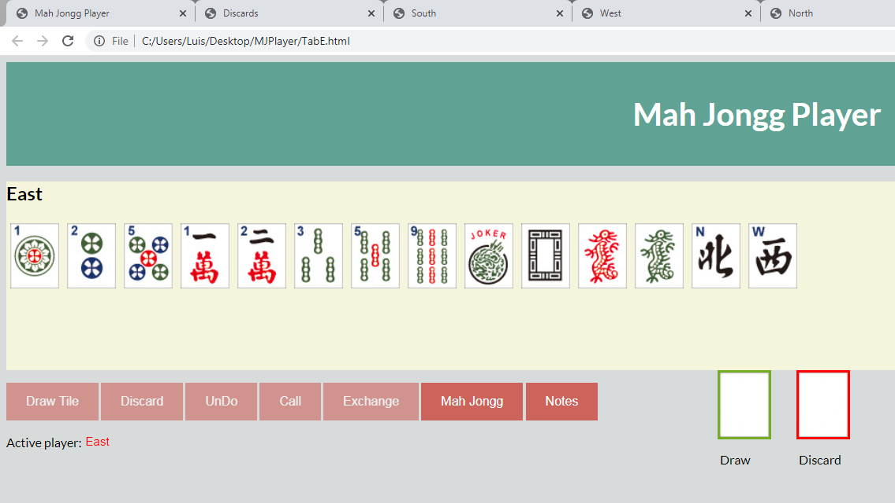

class="infotxt">To start play East discards a tile by clicking on the one selected. The tile is moved to the discard area leaving a blank space in East's hand. You may choose to rearrange the tiles to leave the blank spage at the end of the rack. This changes the active player to North and enables the "Draw" button in North's window. Throughout the game only the active hand has the "Draw" button enabled. The "Discard button is enabled only after a tile has been drawn. Whenever a tile has been discarded it appears in all the windows. Any hand can call for a discarded tile by clicking on the "Call" button. This moves the called tile to the "Draw" area in the calling window and removes from all the other windows. The calling process is explained below.
To draw a tile click on the "Draw" button. The drawn tile is moved to the draw area and the discard area is cleared. The discard button is enabled and the draw button is disabled. If you wish to keep the drawn tile drag it to the rack and drop it over the tile it is to replace. That moves the replaced tile to the discard area and the new tile ti it's place on the rack. If you do not wish to keep the drawn tile click on the "Discard" button to move it to the discard area. The next player is not activated until the tile has been disposed of - either kept or discarded.
A window that calls for a tile temporarily becomes the active window. To keep a called tile you drag and drop to to your rack as you would any drawn tile. The calling player must expose the called tile and other matching tiles (or Jokers). This is done by clicking on the "Expose" button and then clicking on each tile to be exposed. An error occurs if the exposed tiles do not match. When the expose process is complete the player must click on the "Continue" button to update the play order and allow the game to continue. Whenever anyone calls for a discarded tile an informational message appears in each window. This message must be dismissed before any activity can take place in that window.
The exposed hand is shown in the calling players window and all exposed hands are shown in the "Mah Jongg Player" window.
To exchange for a Joker in an exposed hand during a player''s turn click on the "Exchange" button. A drop-down list appears where you choose the window containing the exposed hand with which you wish to exchange. Select the window then click on the tile to be exchanged. This replaces the Joker with the tile (provided it matches the run containing the Joker) and move the Joker to it''s place in your hand.